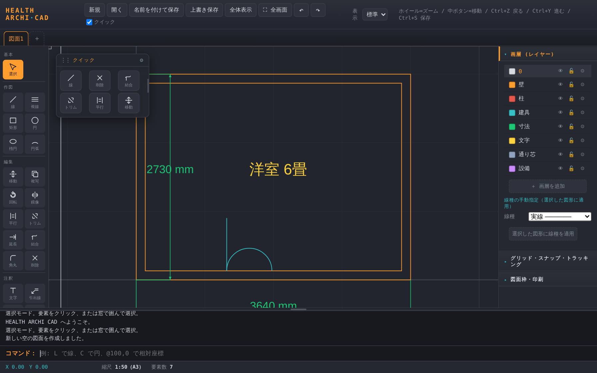
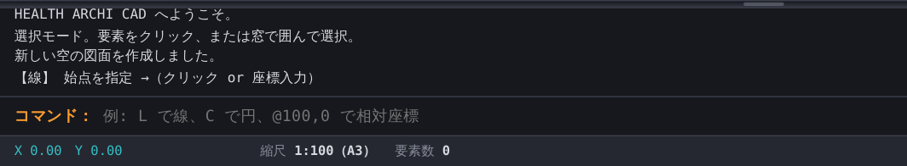
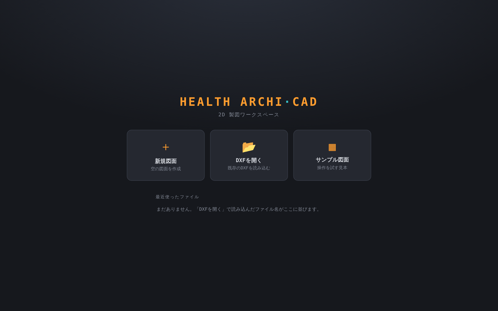
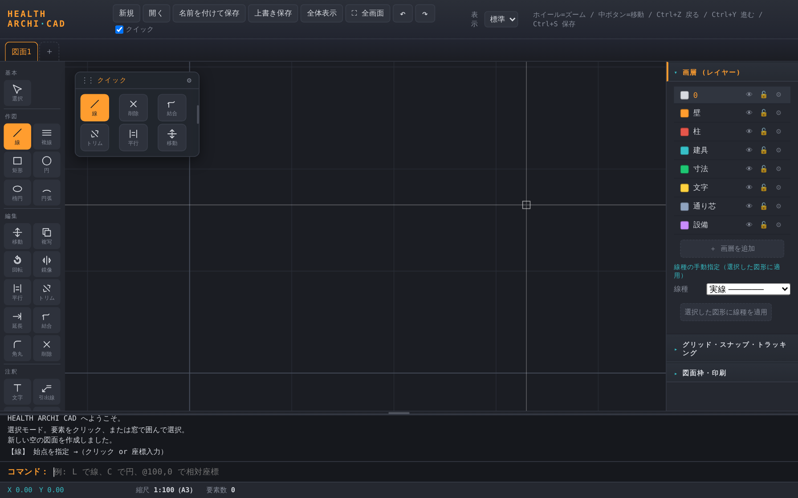
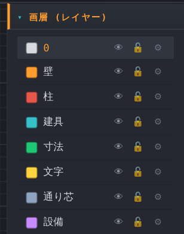
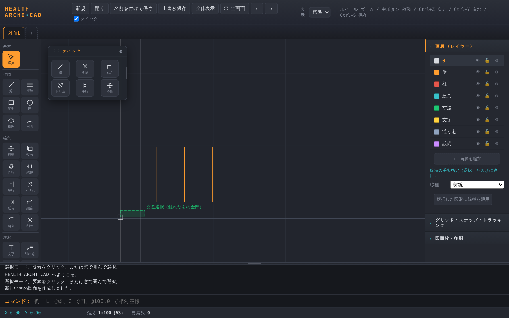

やさしい操作ガイド パソコンは使えるけれど、CAD（製図ソフト）は初めて — そんな方のために
むずかしい言葉はできるだけ使いません。実際の画面を見ながら、最初の図面が描けるところまで、ゆっくり順番に進みます。読みながら同じように手を動かしてみてください。
1これは何をするソフト？
HEALTH ARCHI CAD は、家の間取り図や図面をパソコンで描くためのソフトです。方眼紙に定規で線を引く代わりに、マウスで正確な線・四角・円を描けます。木造住宅の図面づくりに向いています。
下の絵のようなものが作れます。最初は難しそうに見えますが、ひとつずつ覚えれば大丈夫です。

2画面の見かた
画面は大きく4つの場所に分かれています。最初に「どこに何があるか」だけ覚えれば十分です。

左の「道具箱」
線・四角・円などの描く道具と、移動・削除などの直す道具が並んでいます。使いたい道具をクリックして選びます。「基本／作図／編集／注釈／部品」とグループ分けされています。
下の「メッセージ欄」がいちばん大事
道具を選ぶと、画面の下に「次に何をすればいいか」が文章で出ます。迷ったら下を見る、と覚えてください。

3はじめての操作（新しい図面を開く）
ソフトを開くと、最初にこの画面が出ます。3つのうちどれかを選びます。

画面を動かす・拡大する（最初に覚えると楽）
- 拡大・縮小：マウスのホイール（真ん中の回す部分）を前後に回します。
- 画面を動かす：ホイールを押し込んだままマウスを動かします（地図を指でずらす感覚）。
- 全部を見る：上の 全体表示 を押すと、描いたものが画面にぴったり収まります。迷子になったらこれ。
4線を引いてみる
いちばん基本の「線」から。左の道具箱から 線 をクリックします。
- 左の道具箱で 線 をクリック（オレンジ色になれば選べています）。
- 製図する場所で、線の始まりたい所をクリック。
- マウスを動かすと線がついてきます。終わりたい所でもう一度クリック。
- 続けて次の線も引けます。やめたいときは Esc キー、または右クリック。

「カチッと吸い付く」機能（スナップ）
線の端や交わる点の近くにマウスを近づけると、自動でそこにピタッと吸い付きます。これのおかげで、線と線をきれいにつなげられます。方眼（グリッド）の交点にも吸い付きます。

長さをきっちり決めたいとき
「ちょうど3メートル（3000mm）の線がほしい」というときは、始点をクリックして方向を示してから、画面下のコマンド欄に 3000 と打って Enter。正確な長さの線が引けます。
5部屋を描いてみよう（実践）
四角い部屋を描いてみます。四角は1本ずつ線を引かなくても、一発で描けます。
- 左の道具箱で 矩形（くけい＝四角）をクリック。
- 四角の左下にしたい所をクリック。
- そのまま、画面下のコマンド欄に @3640,2730 と打って Enter。
（横3640mm・たて2730mm の四角ができます。数字は好きに変えてOK） - または、数字を使わず右上にしたい所をクリックするだけでも四角になります。

壁を二重線で描くには（複線）
本物の壁は厚みがあるので、二重線で描くと図面らしくなります。複線（ふくせん）を使うと、1回引くだけで平行な線が同時に出ます。

6まちがえたとき（戻す・消す）
いちばん大事な「やり直し」です。これさえ知っていれば安心して描けます。
- ひとつ前に戻す
- キーボードで Ctrl＋Z。または上の ↶ ボタン。何回でも戻せます。
- 戻しすぎたとき（やり直し）
- Ctrl＋Y。または上の ↷ ボタン。
- いらない線を消す
- 左の 削除 を選んで、消したい線をクリック。または、線をクリックして選んでから Delete キー。
たくさんまとめて選ぶ
複数の線をまとめて消したり動かしたいときは、何もない所でクリック→もう一度クリックすると四角い枠ができ、その中のものをまとめて選べます（マウスを押したまま動かす「ドラッグ」でも同じことができます）。

7寸法と文字を入れる
図面には「ここは何ミリ」という寸法や、「洋室」などの文字を入れます。これで図面らしくなります。
寸法（長さを書き込む）
- 左の道具箱で 寸法 をクリック。
- 測りたい2つの点をクリック（例：壁の左端と右端）。
- 少し離れた所をクリックすると、そこに長さ（数字）が自動で書き込まれます。
文字を書く
- 左の道具箱で 文字 をクリック。出てきた小さなパネルに書きたい言葉（例：洋室 6畳）を入れる。
- 文字を置きたい場所をクリック。

8保存と印刷
せっかく描いたものは保存しておきましょう。
- 上のメニューで 名前を付けて保存 をクリック。
（次からは Ctrl＋S で上書き保存できます） - あとで続きを描くときは、上の 開く から保存したファイルを選びます。
- 紙に印刷したいときは、右パネルの 図面枠・印刷 を開いて、用紙の大きさを選んでから印刷します（PDFとして保存もできます）。
9よく出る言葉の意味（用語集）
このソフトやガイドで出てくる言葉を、やさしく説明します。分からない言葉が出たらここを見てください。
- クリック / 右クリック / ドラッグ
- クリック＝マウスの左を1回押す。右クリック＝右を1回押す（操作の確定などに使う）。ドラッグ＝押したままマウスを動かす。
- ツール（道具）
- 線・四角・円などを描く「道具」のこと。左の道具箱から選びます。
- スナップ
- 線の端や交わる点に、マウスが自動で「吸い付く」機能。きれいにつなげるための助けです。
- グリッド
- 画面の方眼（ほうがん）。マス目の交点に吸い付くと、位置をそろえやすくなります。
- 直交（ちょっこう）
- 線を水平・垂直にまっすぐ引く機能。ナナメにならず、きれいな縦横の線が引けます。
- 画層・レイヤー
- 図形を「種類ごとのグループ（壁・寸法・文字…）」に分ける仕組み。透明なシートを重ねるイメージで、色分けや表示/非表示ができます。最初から用意されているので、初めは気にしなくてOK。
- 寸法（すんぽう）
- 「ここは何ミリ」という長さの表示。図面に欠かせません。
- 縮尺（しゅくしゃく）
- 実物を何分の1で描くかの比率。例：1/100 なら、実物100に対して図面は1。用紙の大きさと合わせて決めます。
- mm（ミリメートル）
- このソフトの長さの単位。1メートル＝1000mm、半間＝910mm。
- DXF（ディーエックスエフ）
- 図面を保存するファイルの形式。多くの製図ソフトで開ける共通形式です。
- 部品（ブロック）
- よく使う図形（ドア・トイレなど）を「ひとかたまりの部品」として登録し、何度でも置けるようにしたもの。
② まちがえたら Ctrl＋Z で戻す。
この2つを覚えておけば、安心して練習できます。
このCADは、HEALTH ARCHI 実験室で公開している無料ツールの1つです。
HEALTH ARCHIは「建設業に携わる人が、本来の仕事に戻る」をテーマに、
一級建築士・建設業17年の実務経験から生まれたツールとAI活用ノウハウを公開しています。
新しい無料ツールも、LINE登録で公開のたびにお知らせします。
HEALTH ARCHIは、工務店社長向けに会社専用AI経営パートナー「ISHIZUE」を構築する建設業特化型DX事業を運営しています。
一級建築士・設計現場監督17年実務／書籍「社長が現場を降りる日」（Amazon販売中）。